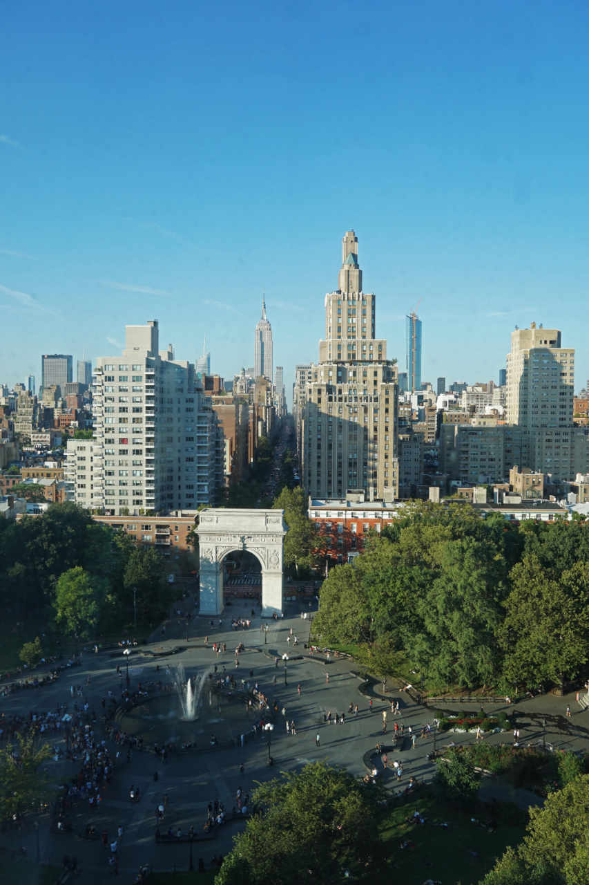
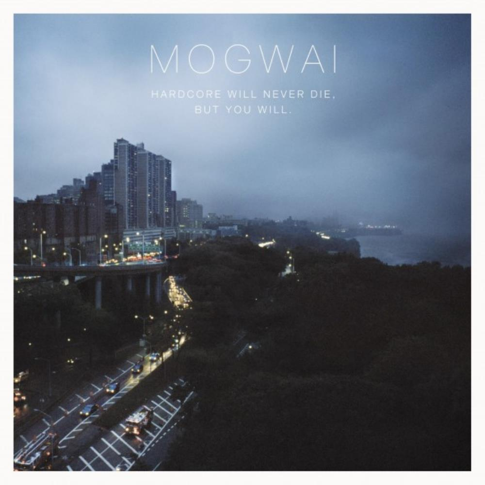

- Searching for Landscapes
- Selected landscape photos from hikes and travels.
- Drawn Views
- Ink and watercolor paintings of various landscape photos I have previously taken.
- Animated Gifs
- Timelapsed photos made into animated gifs.
- Graphic Design
- Small miscellaneous graphic design projects.
Creative
Searching for Landscapes
Around 2012 I began to capture landscape views from various hikes and travels. Most of these photos come from hikes in California or my time in New York. Other photos are from travels around the U.S. and the world. More photos can be found on my tumblr blog at best-views.tumblr.com.
 A sunset view of the Golden Gate Bridge from Battery Godfrey in San Francisco, California.
A sunset view of the Golden Gate Bridge from Battery Godfrey in San Francisco, California.
 A view of lower Manhattan from the top of the Empire State Building in New York City on a clear summer's day.
A view of lower Manhattan from the top of the Empire State Building in New York City on a clear summer's day.
 A beautiful view looking towards the Marin Headlands from McNee Ranch State Park, CA.
A beautiful view looking towards the Marin Headlands from McNee Ranch State Park, CA.
 Looking down one of the many canyons near Junction View on highway 180 in Kings Canyon National Park, CA.
Looking down one of the many canyons near Junction View on highway 180 in Kings Canyon National Park, CA.
Drawn Views
In order to create meaningful birthday gifts for my friends, I decided to make something for them. I chose to draw and watercolor 4 inch by 6 inch framed pieces based on previous photos I had taken that had a connection to the specific friend I was making it for. In this way the piece could be tailored to the specific friend, maintain a minimalist presence, and be built off my previous work. In this project I show the image the piece is based off, the drawing, and the final watercolor. More pieces from this project can be found on my tumblr blog at drawn-views.tumblr.com.
A view up Fifth Avenue in New York City for my landscape collection.
 The previous photo was then used to make this ink drawing.
The previous photo was then used to make this ink drawing.
 The ink drawing was then watercolored to produce this final piece in its frame.
The ink drawing was then watercolored to produce this final piece in its frame.
Animated Gifs
During photo shoots I thought it would be interesting to start capturing some timelapses. I decided to present these collected images in the form of animated gifs for easy sharing over the web. I haven't made enough of these to elicit creating a blog for them, but I have my favorite ones shown below.
 The band plays in a concert at Neumos, Seattle.
The band plays in a concert at Neumos, Seattle.
 A view looking north over the Inner Sunset neighborhood, San Francisco.
A view looking north over the Inner Sunset neighborhood, San Francisco.
 Watching the cars driving through the Noe Valley neighborhood, San Francisco.
Watching the cars driving through the Noe Valley neighborhood, San Francisco.
 The clouds passing over Mt. Tamalpais, California.
The clouds passing over Mt. Tamalpais, California.
Graphic Design
I've made a few logos for various uses. The first I use as the favicon for my experimental web page, datumplane.net. The second uses the logo I made for this web page about myself and for use as a sticker in stickers to link to my experimental web page. The third logo I redesigned from another artist to use as the logo for the NYU BUGS Open Source club during my undergraduate.
 This logo is made to resemble a classic Gibsonian matrix, commonly found in cyberpunk culture.
This logo is made to resemble a classic Gibsonian matrix, commonly found in cyberpunk culture.
 Datumplane is a reference to the Gibsonian matrix found in the Sci-Fi novel Hyperion by San Simmons. The icosahedral shape is a reference to the classic capsid of a virus, one of the most fascinating microbes in biology.
Datumplane is a reference to the Gibsonian matrix found in the Sci-Fi novel Hyperion by San Simmons. The icosahedral shape is a reference to the classic capsid of a virus, one of the most fascinating microbes in biology.
 Because the club focuses heavily on open source software, BUGS is in reference to computer bugs that can be more easily found and solved through making software open source. Although it is capitalized, it is not an acronym. The bug design is in classic ASCII art style, a nod to the early computer era.
Because the club focuses heavily on open source software, BUGS is in reference to computer bugs that can be more easily found and solved through making software open source. Although it is capitalized, it is not an acronym. The bug design is in classic ASCII art style, a nod to the early computer era.
Sometimes I will get creative with photos from my landscape collection and make a fictional album cover. Here I drew inspiration from Mogwai's album Hardcore Will Never Die, but You Will to create my own.
 Version 1.
Version 1.
 Version 2.
Version 2.
Mogwai's original artwork, from which I drew inspiration.